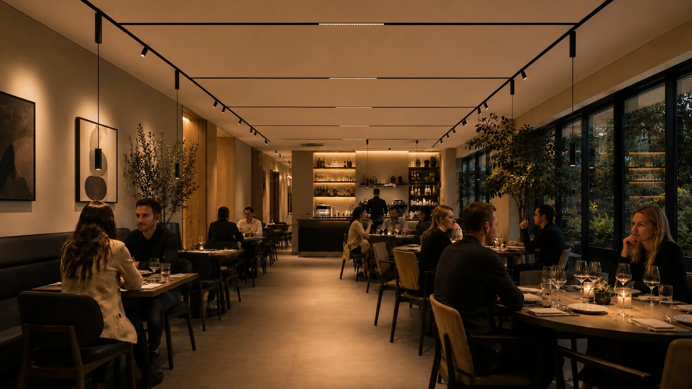
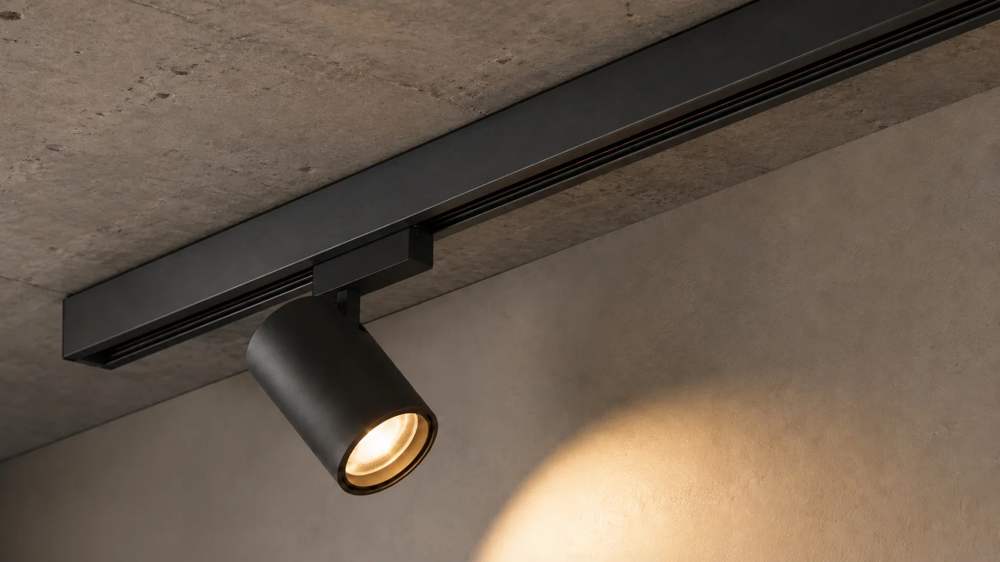
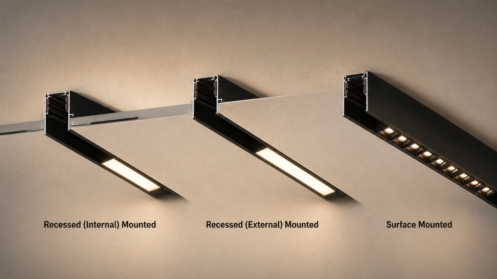

Surface, Recessed, or Trimless? Choose the Right Installation Method for Your Magnetic Track Lighting Project

Choosing the wrong installation method can add 30% to your project cost and delay completion by two weeks. That is not an estimate — it is what we have seen across more than 200 magnetic track lighting projects.
The most common mistake is not choosing the wrong fixture, but the wrong installation method. Ceiling type, construction phase and design intent all point to different answers. The question is: which one fits your project?
Quick Answer
Surface-mounted track lighting is best for concrete ceilings, already-finished spaces and retrofit projects where no drop ceiling is available.
Recessed magnetic track lighting is the industry standard for commercial drop ceilings — clean, mature and reliable.
Trimless track lighting delivers the highest-end invisible finish for luxury villas and minimalist spaces, but requires an experienced installation team and a higher budget.
Surface-Mounted Track Lighting — Best for Concrete Ceilings and Retrofit Projects
Surface-mounted track lighting is fixed directly to the ceiling surface. Concrete, timber or already-finished ceilings — it requires no drop ceiling and no pre-installation preparation. Among the three installation methods, it has the lowest construction threshold.
It suits factories, showrooms, warehouses and any space without a suspended ceiling. It is also the right choice for retrofit projects where the ceiling is already finished and will not be opened up. In industrial or loft-style designs, the visible track profile becomes a deliberate decorative element.
Installation is straightforward — one electrician can complete it in half a day. Maintenance is also the easiest: adding modules, adjusting positions or replacing fixtures does not require touching the ceiling. One consideration: the track is fully exposed. For visually sensitive projects, black or white matte finishes blend better with the ceiling surface.

Recessed Magnetic Track Lighting — The Standard for Commercial Drop Ceilings
Recessed installation embeds the track into a drywall ceiling, with the track face flush against the ceiling surface. This is the most widely used 48V magnetic track lighting method in commercial projects.
Hotel guest rooms, corridors, lobbies, offices, retail stores and showrooms — any space with a standard drywall drop ceiling is best suited to recessed installation. The fixtures appear to grow out of the ceiling, creating a clean, integrated look.
Construction requires the track slot to be prepared during the ceiling installation phase. The electrician and drywall contractor need to coordinate on track dimensions and mounting points before the ceiling is closed. This is the key difference from surface-mounted: recessed is not an afterthought — it must be planned before installation.
Trimless Track Lighting Installation — Invisible Finish for Luxury Interiors
Trimless is the advanced version of recessed. After the track is embedded, the edge is finished with joint compound to completely eliminate the gap between track and ceiling. When done, you see no track edge — only the light.
High-end villas, boutique stores, art galleries and minimalist spaces choose trimless not for functional differences, but for the design pursuit of "less is more." It is the most demanding installation method in terms of workmanship.
The joint compound finish can crack over time if not applied correctly. Not every contractor can deliver trimless quality. If you have a reliable installation team and the budget allows, trimless is the highest quality magnetic track lighting installation available. If contractor quality is uncertain, recessed is a safer choice.

Installation Method Comparison
| Surface-Mounted | Recessed | Trimless | |
|---|---|---|---|
| Installation difficulty | ⭐ Low | ⭐⭐ Medium | ⭐⭐⭐ High |
| Visual finish | Track exposed | Flush with ceiling | Fully invisible |
| Ceiling type | Concrete / finished | Drywall drop ceiling | Drywall drop ceiling |
| Maintenance | Easiest | Moderate | Harder |
| Contractors needed | Electrician only | Electrician + drywall | Electrician + drywall + painter |
| Cost | Lowest | Medium | Highest |
Quick Answer
Concrete ceiling or finished space → surface-mounted. Standard drywall ceiling → recessed. Luxury project with reliable contractors → trimless.
The right installation method depends on your ceiling type, construction phase and budget — not which one looks better on paper.
FAQ: Surface-Mounted vs Recessed vs Trimless Track Lighting
Not sure which installation method fits your project?
Send us your ceiling type, construction phase and project photos. We will match the track profile, mounting accessories and module configuration as one complete system — delivered ready to install.
Contact MAGNETRACK →